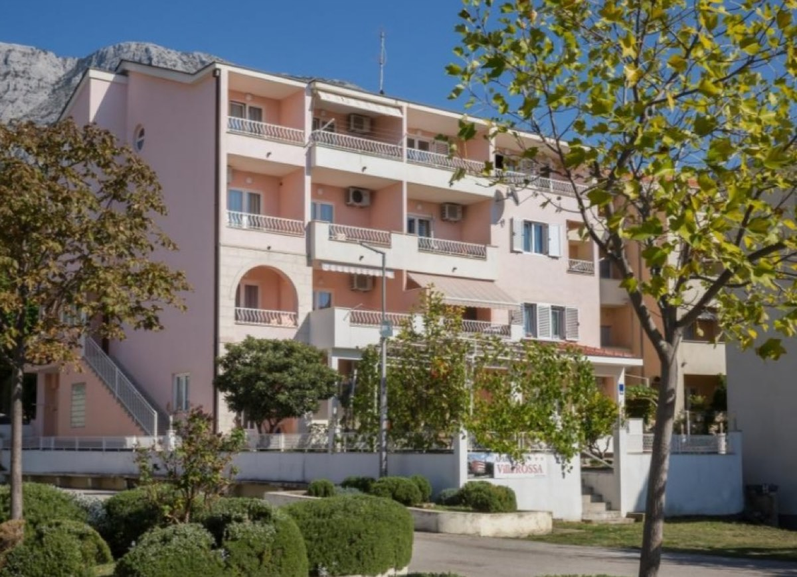
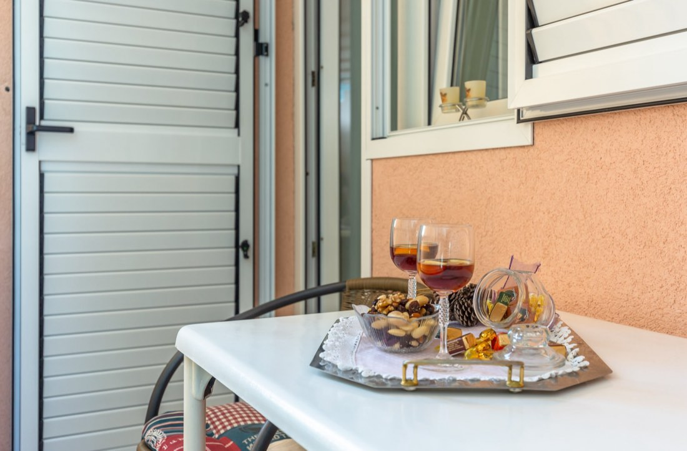
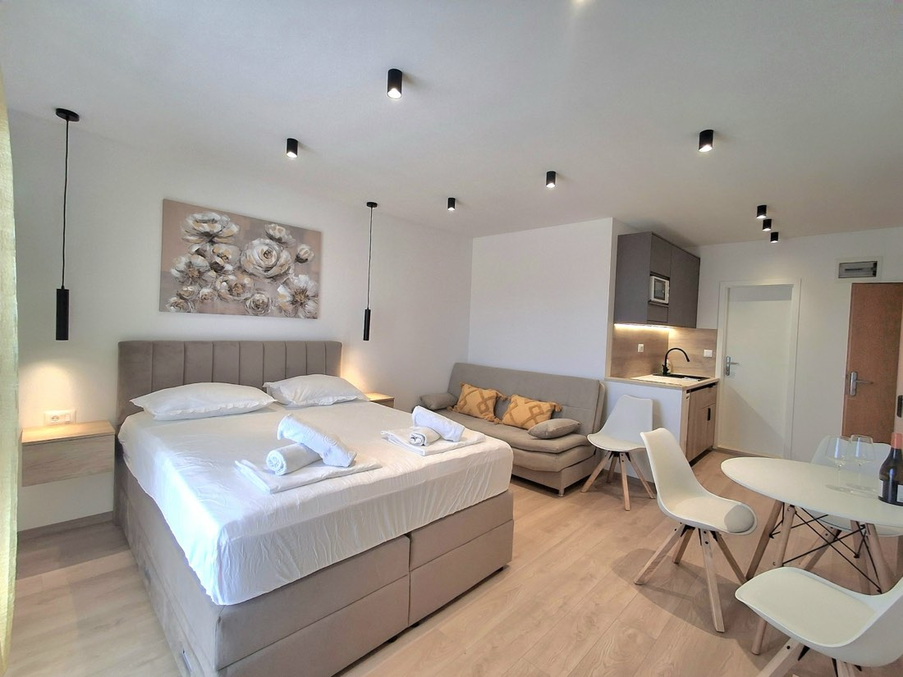
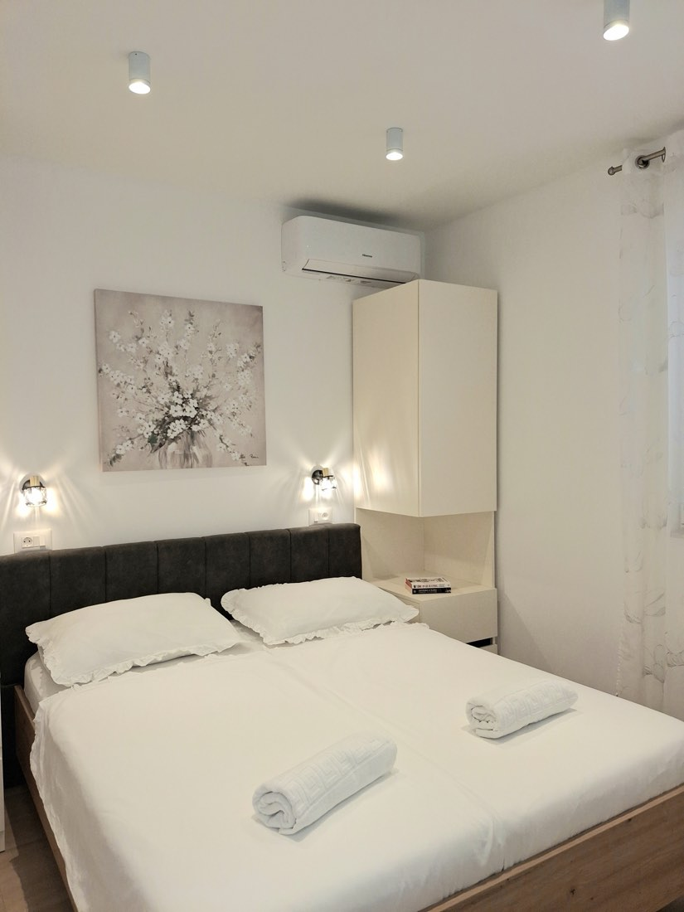
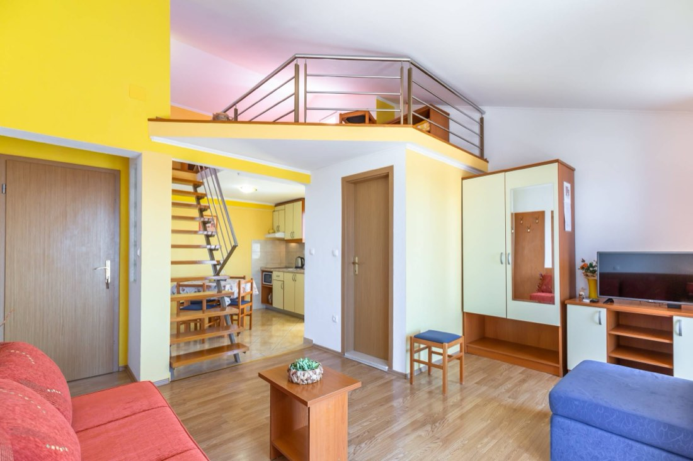
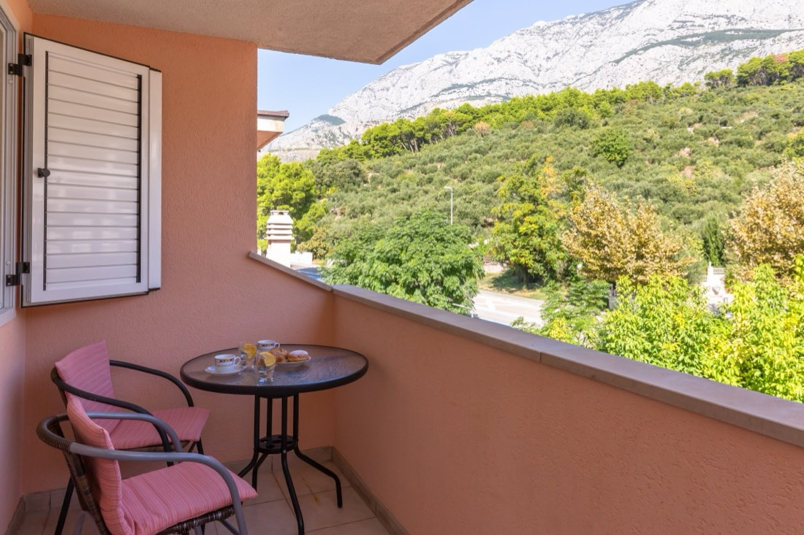
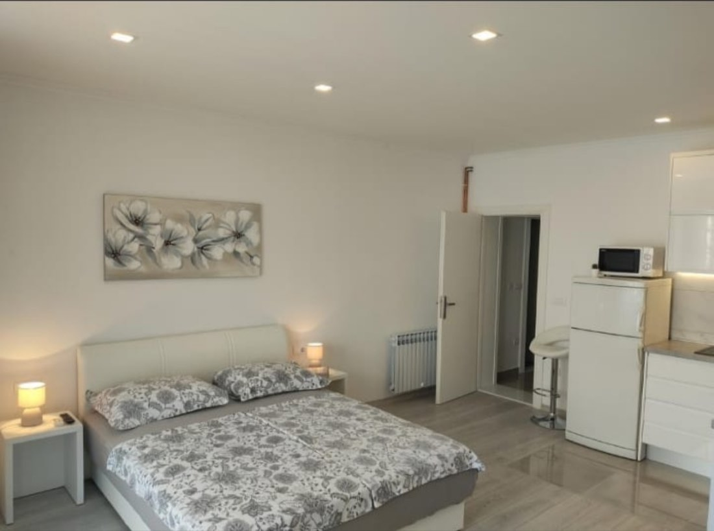

Villa Rossa 2,sto metaraod mora.
Obiteljski apartmani u samom središtu Tučepi, iznad Marine, s pogledom na more ili na Biokovo. Za udobnost gostiju brinemo se osobno.


Domaćinska atmosfera u srcu Tučepi
Tučepi su jedno od najljepših odredišta Makarske rivijere. U samom središtu mjesta, 100 metara od mora i iznad Marine, nalazi se naša Villa Rossa 2, s novoopremljenim apartmanima s četiri zvjezdice.
Svi apartmani imaju kuhinju, kupaonicu, balkon s pogledom na more ili na Biokovo, klimu, SAT TV, Wi-Fi i sef. Svi gosti imaju osiguran parking u našem dvorištu. Svakog gosta dočekujemo pićem dobrodošlice:
Ako želite osjetiti čari Gornjih Tučepi, nudimo vam izlet u staro selo, gdje smo obnovili rodnu kuću i konobu.
Obitelj Dragičević
Šest apartmana i kuća u selu
Apartmani su na drugom i trećem katu kuće. Odaberite onaj koji vam odgovara, a mi ćemo vam javiti slobodne termine i cijenu.

Apartman 1
Spavaća soba, dnevni boravak s tri pomoćna ležaja i balkon s pogledom na more.
Detalji
Apartman 2
Studio s bračnim krevetom, pomoćnim ležajem i balkonom s pogledom na more.
Detalji
Apartman 3
Spavaća soba, boravak s dva pomoćna ležaja i balkon s pogledom na Biokovo.
Detalji
Apartman 4
Dvoetažni apartman, spavaća soba na galeriji i balkon s pogledom na more.
Detalji
Apartman 5
Dva balkona: iz spavaće sobe pogled na more, iz dnevne sobe na Biokovo.
Detalji
Apartman 6
Studio za dvije osobe i pomoćni ležaj, s terasom.
Detalji
Kuća u selu
Obnovljena rodna kuća u starom selu ispod Biokova: dvije spavaće sobe, dvije kupaonice, kuhinja, klima, SAT TV i Wi-Fi. Kamen, konoba i kamin.
DetaljiOd mora do Biokova
Tučepi su 3 km južnije od Makarske. Uz cijelo mjesto proteže se plaža sa šetnicom, a iznad sela uzdiže se Biokovo.
More i plaža
Plaža i šetnica s kafićima, restoranima i trgovinama, 100 m od kuće.
Središte mjesta
Pošta, ljekarna, trgovine, turistička agencija i mjenjačnica, sve na 100 m.
Iznad Marine
Pokraj osnovne škole, s parkingom u dvorištu. Liječnik je 50 m od kuće.
Staro selo
Naša obnovljena kuća i konoba, stare crkvice i etno zbirka Škrinjica.
Biokovo
Park prirode iznad Tučepi i najviši vrh, Sveti Jure.
Kuća, balkoni i pogled


Prije dolaska
Koliko je kuća udaljena od mora?
Oko 100 m. Villa Rossa 2 je u samom središtu Tučepi, iznad Marine, pokraj osnovne škole. Plaža, centar, trgovina i restorani su na stotinjak metara.
Ima li parkinga?
Da. Svi gosti imaju osiguran parking u našem dvorištu.
Koliko košta smještaj?
Cijena je na upit. Pošaljite datume dolaska i odlaska te broj odraslih i djece, a mi ćemo vam javiti cijenu i je li apartman slobodan.
Što ima svaki apartman?
Kuhinju, kupaonicu, balkon s pogledom na more ili Biokovo, klimu, SAT TV, Wi-Fi i sef. U opremi apartmana 1–5 naveden je i dječji krevetić.
Koliko je do zračne luke i kolodvora?
Autobusni kolodvor je oko 4 km od kuće, a zračna luka i željeznički kolodvor oko 50 km.
Javite nam svoje datume
Upit za smještaj
Cijena je na upit. Ispunite obrazac i otvorit će se pripremljeni e-mail.